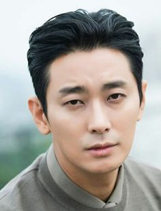
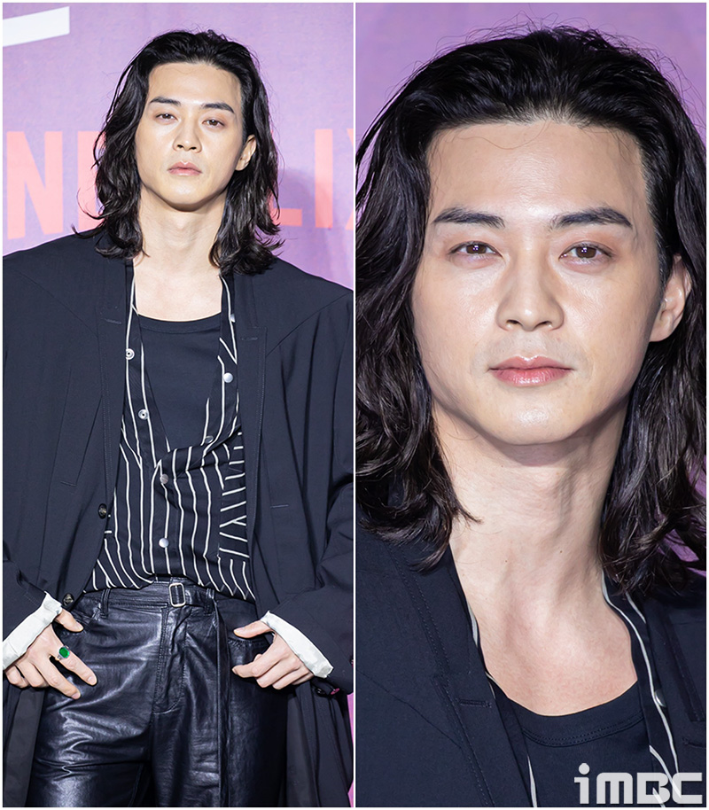
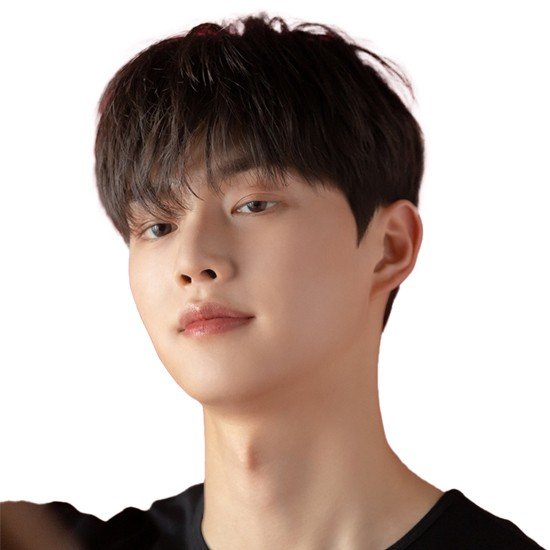
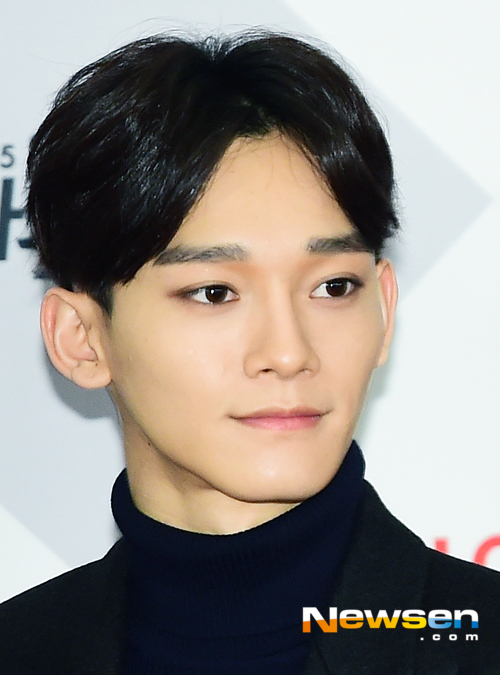

1.몸 유지:꾸준한 운동으로 비만,깡마른몸을 피하고 적정체중을 유지하자!
2.피부 관리: 로션 꼭 바르고 세안 매일하기!
3.머리 스타일: 요즘 유행하는 것보다는 자신의 얼굴형에 맞는것이 중요하다.
3-1. 각진 사각턱형은 옆머리를 눌러주는 다운펌이
중요하다 양쪽으로 부해보일수 있다.(가일컷,포마드펌)

3-2.긴 얼굴형은 장발이 잘 어울린다 얼굴 옆을 가리는
듯한 느낌으로 가는게좋아(볼륨 장발)

3-3.둥근 얼굴형은 이마를 드러내주면서 머리를
각지게하면 좋다(아이비리그컷 드롭컷 시스루컷).

3-4.광대 돌출형: 얼굴이 각져 인상이 강해보이므로
(리프컷,오대오 가르마)

4.눈썹 관리:미용실 가면 해준다 꽤나 중요하다 해보자.
5.수염 관리:더러워보이고 관리 안하는것 같다 레이저제모 하면 좋다.
6.옷 스타일:이것도 커스텀이 더 중요하다고 생각한다
6-1. 마른스타일: 가로 스트라이프 옷,박스티
피해야할것-너무 딱달라붙는옷
6-2.뚱뚱한 스타일: 세로 스트라이프옷, 올블랙
피해야할것: 너무큰 박스티-더 부해보임
6-3:밝은 계열피부:화사한 색이 잘어울림 하얀색,밝은색 계열
6-4 어두운 피부: 단색(회색,검정,하양),
피해야할것:밝은색톤 옷